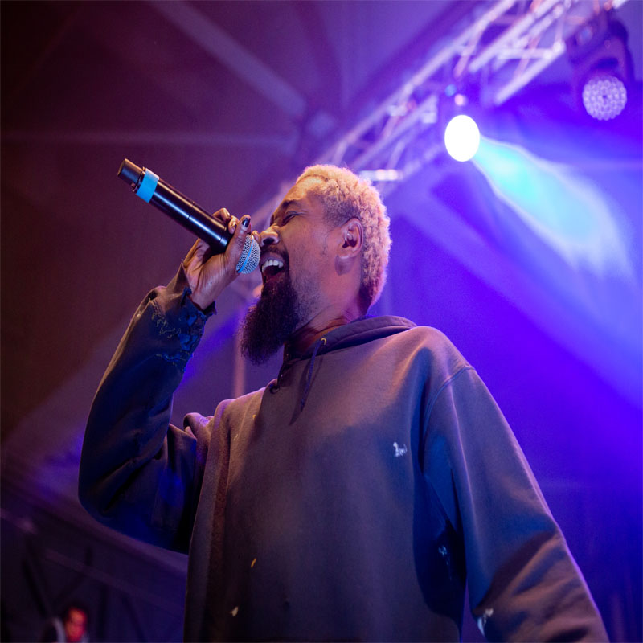

Danny Brown
Danny Brown, geboortenaam Daniel Dewan Sewell, komt uit Detroit, Michigan, Verenigde Staten. Hij is nu 42 jaar. Van jongs af aan was hij groot fan van de Hip-Hop cultuur en hij ontdekte ook vroeg al zijn eigen raptalenten. Hij praatte als jong kind in rijmen, door de kinderboeken die zijn moeder hem voorlas (boeken van Dr Seuss). Hij is opgegroeid in een van de armere wijken van Detroit waardoor criminaliteit en straatgeweld hem ook niet ontkwam vanaf een bepaalde leeftijd, wegens de wensen van de ouders. Maar hij wou altijd rapper worden. Helaas werd zijn talent nooit echt herkent. Na jarenlang blijven rappen brak hij eindelijk door met zijn album 30 gespeld als 'XXX'. Wat refereert naar zijn leeftijd.